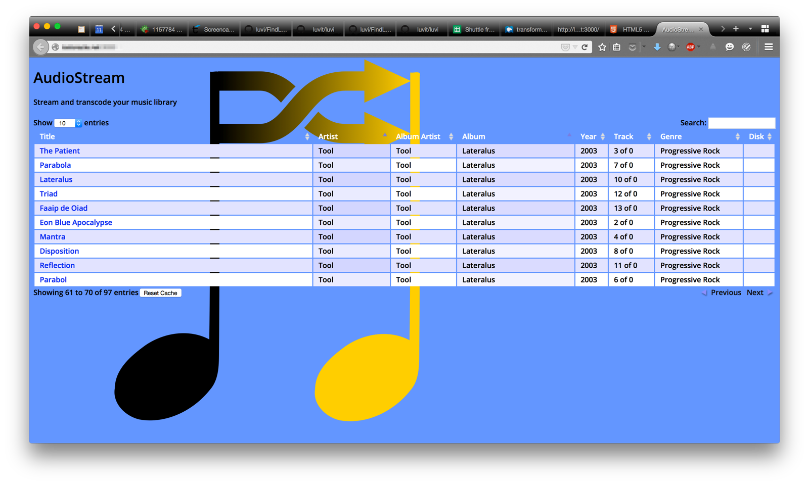
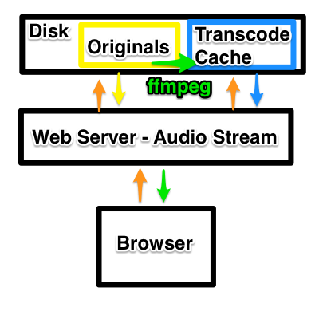
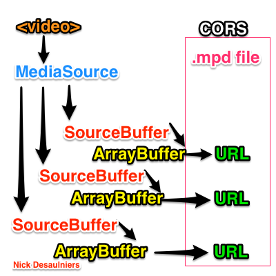
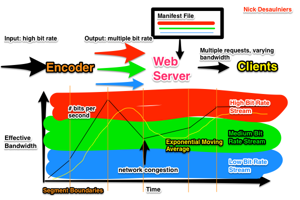
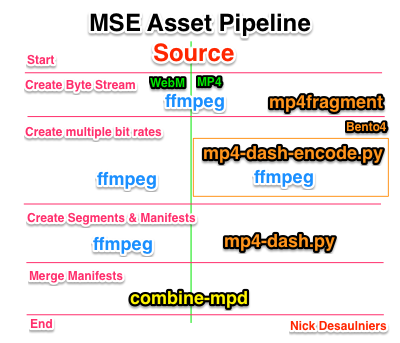

Let's Make a Netflix
An Intro to Streaming Media on the Web
Topics
Terminology
Transcoding
Audio & Video tags
MSE
DASH
Terminology
Pulse Coded Modulation
Audio PCM streams are made up of a sample rate: how frequently the amplitude is measured (ex. 320 Mbps), and bit depth: how many possible digital values can be represented by one sample.Compression
The Digital to Audio Converter (DAC) on your computer's soundcard expects PCM (HD Audio or AC'97), but PCM is large and therefore expensive to store and transmit.Lossy vs Lossless Compression
Lossless compression allows us to more efficiently represent the same uncompressed data and also sounds fantastic on your expensive audio equipment.
Lossy compression sacrifices fidelity for size and allows you to store thousands of songs on your phone.
Lossy vs Lossless Compression
Lossless to lossy is a one way conversion
You cannot get back fidelity once it's been thrown away

Codecs
Codecs are how the media data is represented, or encoded. Some codecs are lossy like MP3, some are lossless like FLAC. Most codecs are encumbered by patents. :(Containers
Containers such as WAV, MP4, and Ogg represent the meta-data of a media file such as artist or duration, subtitles, etc. Containers, in addition to their meta-data, will contain streams of audio or video encoded via a specific codec.File Extension
Sometimes used by OS to determine what program should open what file. Unreliable; anyone can change the file extension of a given file, but that does not change the encoding (how the bits are arranged) or the container (how the meta-data and streams are packaged).Playlists
Playlist files are used by media playing applications to play subsequent mediums. Browsers do not understand playlist files, but playlist files can easily be parsed in JavaScript.Protocol
How are the bits transferred from one machine to another? On the Web, HTTP is the most familiar, but there are other protocols used when streaming media such as RTSP and ICY.Know Your Terms
Codecs, containers, file extensions, playlist files, and protocols are not equivalent. Ex. Media A could be aac encoded, in an MP4 container, with a .m4a extension, listed in a m3u playlist file, served over ICY.Hardware Acceleration
Media can be decoded in software or in hardware. Application Specific Integrated Circuits (ASICs) can be faster and more power efficient than General Purpose Processors. Mobile friendly. They can also be patent encumbered.Transcoding
Why?
- Not all browsers support all codecs.
- A lossy to lossy conversion is preferable to asking the user to install a different browser.
- If storage is cheaper than bandwidth, also preferable.
FFmpeg
Your free and Open Source transcoding swiss army knife.
$ ffmpeg -h full 2>/dev/null| wc -l
5424
The Extreme Basics
ffmpeg -i input.wav output.mp3
ffmpeg -i input.y4m -i input.wav output.webm
Codec support
ffmpeg -codecs will tell you if you can decode from one codec and encode into another.
$ ffmpeg -codecs
DEV.LS h264 H.264 / AVC / MPEG-4 AVC / MPEG-4 part 10 (decoders: h264 h264_vda ) (encoders: libx264 libx264rgb )
DEV.L. vp8 On2 VP8 (decoders: vp8 libvpx ) (encoders: libvpx )
DEV.L. vp9 Google VP9 (decoders: vp9 libvpx-vp9 ) (encoders: libvpx-vp9 )
DEA.L. mp3 MP3 (MPEG audio layer 3) (decoders: mp3 mp3float ) (encoders: libmp3lame )
DEA.L. opus Opus (Opus Interactive Audio Codec) (decoders: opus libopus ) (encoders: libopus )
If you're missing an expected encoder/decoder, you probably need to install a shared library and rebuild/reinstall ffmpeg. Not fun.
FFmpeg
ffmpeg -i input.file will tell you a lot about a file.
$ ffmpeg -i bunny.mp4
Duration: 00:01:00.10 ...
Stream #0:0(eng): Audio: aac ... 22050 Hz, stereo, ... 65 kb/s
Stream #0:1(eng): Video: h264 ... 640x360, 612 kb/s, 23.96 fps ...
Multiplexing
aka muxing
$ ffmpeg -i bunny.mp4
Stream #0:0(eng): Audio: aac ... 22050 Hz, stereo, ... 65 kb/s
Stream #0:1(eng): Video: h264 ... 640x360, 612 kb/s, 23.96 fps ...
Stream #0:2(eng): Data: none (rtp / 0x20707472), 45 kb/s
Stream #0:3(eng): Data: none (rtp / 0x20707472), 5 kb/s
$ ffmpeg -i bunny.mp4 -map 0:0 -map 0:1 -c copy bunny_clean.mp4
$ ffmpeg -i bunny_clean.mp4
Stream #0:0(eng): Audio: aac ... 22050 Hz, stereo, ... 65 kb/s
Stream #0:1(eng): Video: h264 ... 640x360, 612 kb/s, 23.96 fps ...
Audio & Video Tags
AudioStream
AudioStream
Byte Range Requests
A browser will make Byte Range Requests on behalf of a media element to buffer content.
Request Headers:
- Range: bytes=0-
Response Headers:
- Content-Length: 1024
- Content-Range: 0-1023:4096
What if we want finer grain control over loading assets?
Why?
Video is easily an order of magnitude larger in file size than audio.
Waste of bandwidth if user downloads entire file, but watches only a part.
Binary Data
var xhr = new XMLHttpRequest;
xhr.open('GET', 'song.mp3');
xhr.responseType = 'arraybuffer';
xhr.onload = function () {
var audio = new Audio;
audio.src = URL.createObjectURL(new Blob([xhr.response], {
type: 'audio/mpeg' }));
audio.oncanplaythrough = audio.play.bind(audio);
};
xhr.send();
plus byte range requests?
Binary data + byte range requests
Audio tags don't let us combine arraybuffers, they require one contiguous arraybuffer. Web Audio API can help here.
But...
Results in audible clicks between segments. Finding the proper range to segment by is very difficult. Web Audio API does not help here.
MSE
Browser Support
MediaSource.isTypeSupported() MSE Byte Stream Format Registry, Notes| Browser | video/mp4 | video/webm | video/mp2t | audio/mpeg | audio/aac |
|---|---|---|---|---|---|
| Chrome45 | ✓ | ✓* | ✗ | ✓ | ✓ |
| Firefox 38 | ✓** | ✗ | ✗ | ✗ | ✗ |
| IE 11 | ✓ | ✗ | ✓ | ✗ | ✓ |
| Opera 30 | ✓* | ✓* | ✗ | ✗ | ✗ |
| Safari 8 | ✓* | ✗ | ✗ | ✗ | ✗ |
* Needs codec specified MediaSource.isTypeSupported('mime; codecs=""'); List ** whitelisted to very few sites like YouTube, FF 38-41/42? Test in Nightly, media.mediasource.whitelist -> false in about:config
A note about mp4
mp4 needs to be "fragmented." From ISO BMFF Byte Stream Format §3:
An ISO BMFF initialization segment is defined in this specification as a single File Type Box (ftyp) followed by a single Movie Header Box (moov).
wut?
How to check if your mp4 is properly fragmented
I highly recommend axiomatic-systems/Bento4 on GitHub.
$ ./mp4dump ~/Movies/devtools.mp4 | head [ftyp] size=8+24 ... [free] size=8+0 [mdat] size=8+85038690 [moov] size=8+599967 ...
...ftype followed by a single moov...
How to make your mp4 properly fragmented
$ ./mp4fragment ~/Movies/devtools.mp4 devtools_fragmented.mp4 $ ./mp4dump devtools_fragmented.mp4 | head [ftyp] size=8+28 ... [moov] size=8+1109 ... [moof] size=8+600 ... [mdat] size=8+138679 [moof] size=8+536 ... [mdat] size=8+24490 ... ...
...ftype followed by a single moov...
You'll also notice multiple moof/mdat pairs.
When transcoding with ffmpeg, you'll want the flag: -movflags frag_keyframe+empty_moov
HTMLMediaElement
Media Source Extensions
MSE pseudocode
m = MediaSource
m.onsourceopen = () =>
s = m.addSourceBuffer 'codec'
s.onupdateend = () =>
if numChunks === totalChunks
m.endOfStream()
else
s.appendBuffer nextChunk
s.appendBuffer arrayBufferOfContent
video.src = URL.createObjectURL m
Demo: buffer ASAP
Demo: Buffer just in time
DASH
Adaptive Bitrate Streaming
Asset pipeline
Browser caching
Some browsers over-aggresively cache CORS related content.
In Safari, Develop > Empty Caches or Disable Caches
In Firefox 41, enable private browsing.
DASH demo
bugs